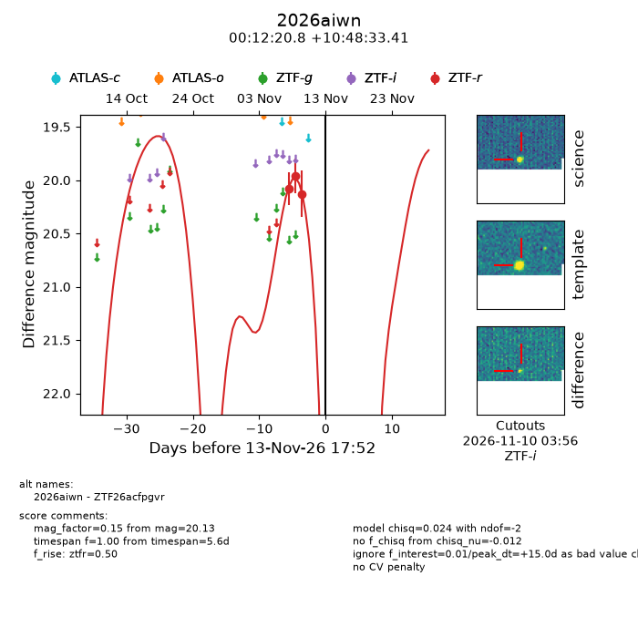
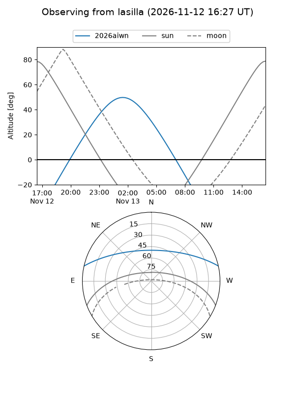
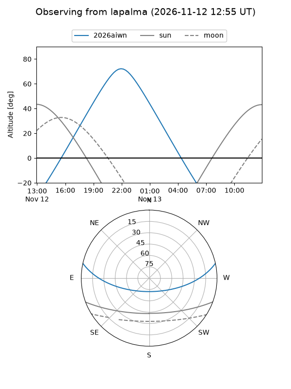
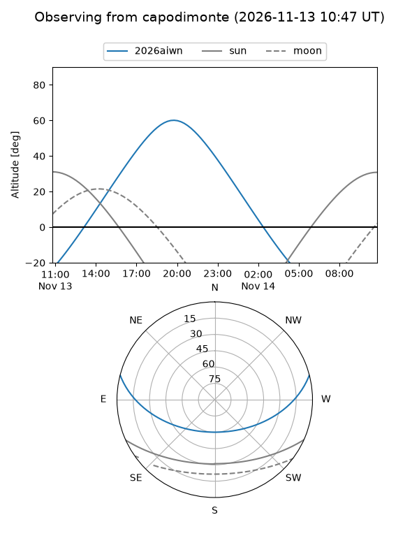
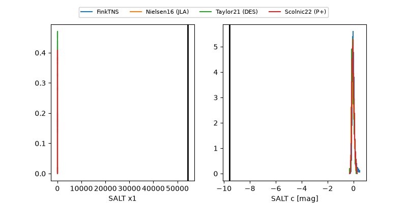

2026aiwn
Target 2026aiwn at 2026-11-13 17:58
Aliases and brokers:
FINK-ZTF: ztf.fink-portal.org/ZTF26acfpgvr
Lasair-ZTF: lasair-ztf.lsst.ac.uk/objects/ZTF26acfpgvr
ALeRCE-ZTF: alerce.online/object/ZTF26acfpgvr
YSE-PZ: ziggy.ucolick.org/yse/transient_detail/2026aiwn
TNS name: wis-tns.org/object/2026aiwn
Direct TNS query: direct search
alt names
ZTF26acfpgvr (ztf,fink_ztf)
2026aiwn (tns,yse)
Coordinates:
equatorial (ra, dec) = 3.0868,+10.80928
equatorial (HMS+DMS) = 00:12:20.84,+10:48:33.41
galactic (l, b) = (107.6044,-50.89543)
Flags:
peak dt: +15.0
Photometry:
last ztfr=20.13
3 ztfr detections
Lightcurve

Visibility



Additional plots
